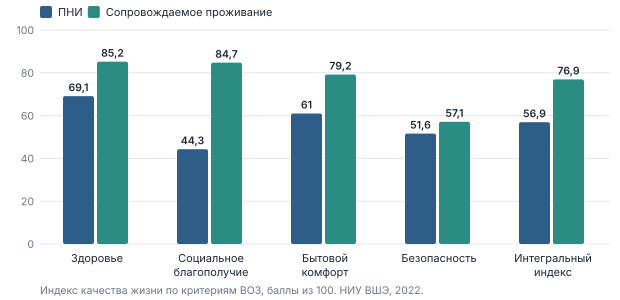

Семинар «Пространство Новых Идей 2.0» · Минтруд России
Сколько стоит достойная жизнь
Реформа психоневрологических интернатов: что известно о ценах, что доказано в мире и какой объём услуг можно купить на имеющиеся деньги.
Версия 3 · октябрь 2026 · данные проверены, калькулятор пересчитан
Кто живёт в ПНИ
139 тысяч человек в 466 интернатах
74 %признаны недееспособными, опекун — обычно интернат
289мест в среднем в одном ПНИ; эксперты называют оптимальным 20–50
98,6 %мест заняты; в очереди около 2,8 тыс. человек
Источники: «Если быть точным» по данным Минтруда, 2022–2024; «Ведомости», 2026.
Исправление к первой версии
Месяц в ПНИ и в квартире с сопровождением стоит близко

Текущие расходы на человека в месяц, тыс. ₽. ВШЭ (2022), «Известия» (2026).
Было: «8–24 против 2–6 тыс. ₽, в 4 раза дешевле».
Стало: эти цифры — капитальные затраты. Текущие: 44,8 в ПНИ и 52,9 в проектах сопровождаемого проживания (Москва — 111,9).
Что доказано
Качество жизни при сопровождаемом проживании заметно выше

Индекс качества жизни по критериям ВОЗ, баллы из 100. ВШЭ, 2022.
- 76,9 против 56,9 в целом.
- Социальное благополучие: 44,3 → 84,7.
- Безопасность почти не изменилась: 51,6 → 57,1.
Оговорка: оценка на проектах НКО, выборка в публикациях не раскрыта.
Что говорит мировая наука
«Дешевле» не доказано. «Не дороже при том же качестве» — доказано
- DECLOC (Европейская комиссия, 2007, 28 стран): нет данных, что сообщество дороже учреждения при сопоставимых потребностях и качестве; дешёвые учреждения почти всегда дают низкое качество.
- Систематический обзор BMJ Open (2019): два подходящих исследования, результаты противоположны; «не однозначно дешевле».
- Переход стоит денег: 2–3 года двойного финансирования — старые места и новые квартиры.
Калькулятор
Сколько услуг на 1 млн рублей в год
| Единица | На 1 млн ₽ |
|---|
| Место в ПНИ (44,8 тыс. ₽/мес) | 1,9 человека |
| Сопровождаемое проживание (52,9) | 1,6 человека |
| Сопровождаемое проживание, Москва (111,9) | 0,7 человека |
| Часы сопровождения (350–600 ₽, допущение) | 1 700–2 900 часов |
Один миллион — это два места или 3–5 человек на лёгком сопровождении (12 часов в неделю). Что выгоднее, зависит от потребности человека.
Когда квартира дешевле места
Знак разницы зависит от двух чисел вашего региона

Модель автора: сопровождение + жильё и быт. Допущения заменяются данными региона.
- Точка безубыточности: от 3 до 15 часов в неделю.
- Что мерить: тариф часа и стоимость жилья и быта.
- Регион N (400 мест, 215 млн ₽ в год): перевод 80 человек — от −4 до +23 млн ₽ в год.
Охват
Потенциал — около 63 тысяч человек. На постоянном проживании — не более 1,8 тысячи
- Минтруд: около 7 тыс. вместе с учебным проживанием.
- 74 % участников — в учебных квартирах.
- Группы в среднем 7–8 человек при рекомендации 3–4.
Главные барьеры
Деньги — не первый вопрос
- Дееспособность: 74 % недееспособны; закон о распределённой опеке отклонён в феврале 2025.
- Жильё: некуда выписываться; квартиры сирот нельзя использовать, пока человек в интернате.
- Финансирование «на место» вместо «на человека».
- Переименование вместо реформы: 41 регион переименовал ПНИ; строятся новые крупные здания.
Что уже сделано в регионах
Проверенные примеры
- Нижегородская область: обследовали 350 жителей — у каждого пятого потребность не более 12 часов в неделю.
- Ленинградская область: перечень из 14 дополнительных услуг; субсидия работодателю до 500 тыс. ₽.
- Ярославская область: «Дом как дом» — около 90 тыс. ₽ в месяц на человека с тяжёлыми нарушениями.
- Якутия: проект с ВЭБ.РФ — 12 мест и 18 человек на дому (план 2024).
Мировой опыт: что взять
Идеи, которые не требуют больших денег
- Германия: уровни потребности определяют пакет помощи; деньги семье, которая ухаживает сама.
- Англия: отдельная строка расходов на сопровождаемое проживание и прямые выплаты.
- Триест: круглосуточный центр в районе вместо больницы за городом.
- Финляндия: жильё и поддержка сразу; но в 2024 году бездомность выросла впервые за 11 лет.
Уроки провалов
Сначала альтернатива, потом выписка
- США: закрыли больницы без сообщества — люди оказались в тюрьмах.
- Уинтербоурн-Вью: закрытое учреждение без внешних глаз; к 2014 году 10 из 48 человек оставались в стационарах.
- Греция: проектные деньги без постоянной статьи бюджета откатились.
- Скандинавия: урезали лёгкую помощь — выросли очереди.
План региона
Пять шагов
| Шаг | Что делать | Срок |
|---|
| 1. Обследование | Потребность в часах, навыки, жильё, семья, дееспособность | 3–6 мес. |
| 2. Расчёт | Свои тарифы, переходный фонд, судьба освободившихся мест | 1–2 мес. |
| 3. Документы | Порядок, перечень услуг, норматив «на человека» | 6–12 мес. |
| 4. Первая волна | 15–30 человек из лёгкой когорты, метрики качества | год 1–2 |
| 5. Масштаб | Малые формы, жильё, кейс-менеджеры | год 2–5 |
Три вопроса, с которых стоит начать
Что будет с освободившимися местами: закроем или заполним из очереди?
Какой размер группы мы считаем нормой и почему?
Что подхватит расходы на третий год, когда закончится пилот?
Полный текст, источники, журнал исправлений и непроверенные утверждения — в докладе.